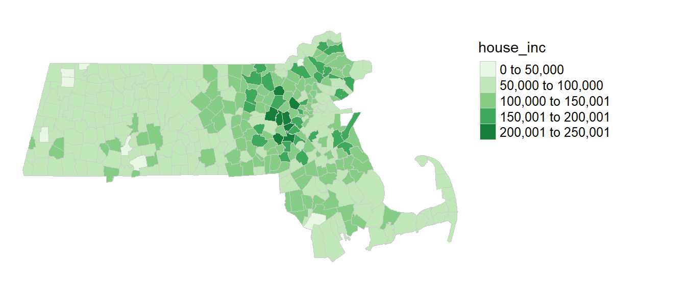
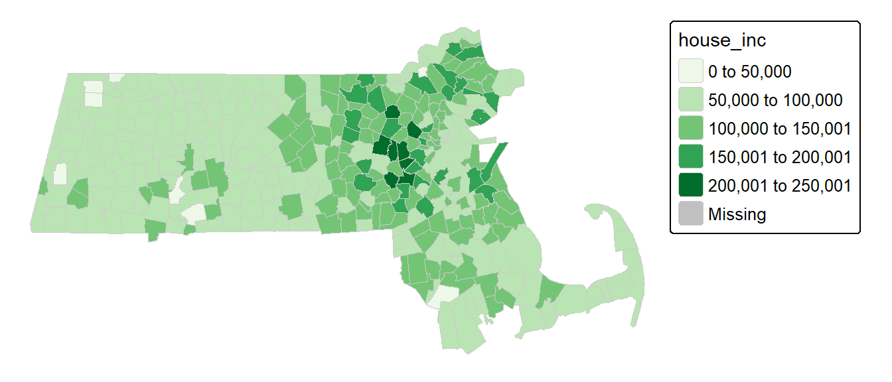
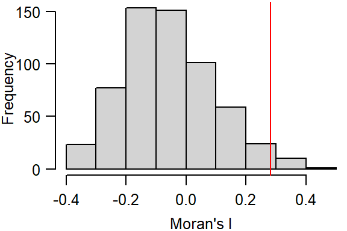
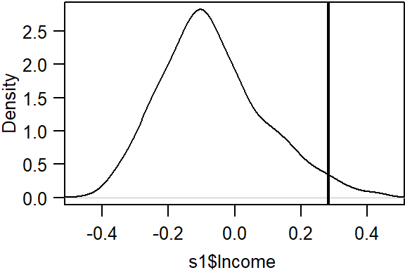
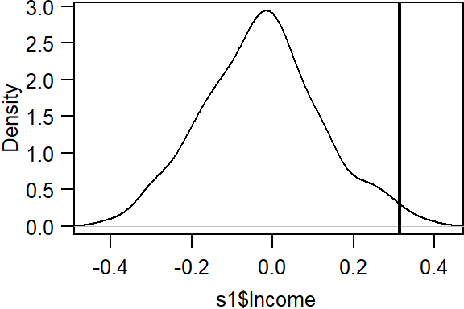

I Spatial autocorrelation in R
| R | tmap | spdep |
| 4.3.2 | 3.3.4 | 1.2.8 |
For a basic theoretical treatise on spatial autocorrelation the reader is encouraged to review the lecture notes. This section is intended to supplement the lecture notes by implementing spatial autocorrelation techniques in the R programming environment.
Sample files for this exercise
Data used in the following exercises can be loaded into your current R session by running the following chunk of code.
The data object consists of an sf vector layer representing income and education data aggregated at the county level for the state of Maine.
Introduction
The spatial object s1 has five attributes. The one of interest for this exercise is Income (per capita, in units of dollars).

Let’s map the income distribution using a quantile classification scheme. We’ll make use of the tmap package.
library(tmap)
tm_shape(s1) + tm_polygons(style="quantile", col = "Income") +
tm_legend(outside = TRUE, text.size = .8) 
Define neighboring polygons
The first step requires that we define “neighboring” polygons. This could refer to contiguous polygons, polygons within a certain distance band, or it could be non-spatial in nature and defined by social, political or cultural “neighbors”.
Here, we’ll adopt a contiguous neighbor definition where we’ll accept any contiguous polygon that shares at least on vertex (this is the “queen” case and is defined by setting the parameter queen=TRUE). If we required that at least one edge be shared between polygons then we would set queen=FALSE.
For each polygon in our polygon object, nb lists all neighboring polygons. For example, to see the neighbors for the first polygon in the object, type:
[1] 2 3 4 5Polygon 1 has 4 neighbors. The numbers represent the polygon IDs as stored in the spatial object s1. Polygon 1 is associated with the County attribute name Aroostook:
[1] Aroostook
16 Levels: Androscoggin Aroostook Cumberland Franklin Hancock Kennebec ... YorkIts four neighboring polygons are associated with the counties:
[1] Somerset Piscataquis Penobscot Washington
16 Levels: Androscoggin Aroostook Cumberland Franklin Hancock Kennebec ... YorkNext, we need to assign weights to each neighboring polygon. In our case, each neighboring polygon will be assigned equal weight (style="W"). This is accomplished by assigning the fraction \(1/ (\# of neighbors)\) to each neighboring county then summing the weighted income values. While this is the most intuitive way to summaries the neighbors’ values it has one drawback in that polygons along the edges of the study area will base their lagged values on fewer polygons thus potentially over- or under-estimating the true nature of the spatial autocorrelation in the data. For this example, we’ll stick with the style="W" option for simplicity’s sake but note that other more robust options are available, notably style="B".
The zero.policy=TRUE option allows for lists of non-neighbors. This should be used with caution since the user may not be aware of missing neighbors in their dataset however, a zero.policy of FALSE would return an error.
To see the weight of the first polygon’s four neighbors type:
[[1]]
[1] 0.25 0.25 0.25 0.25Each neighbor is assigned a quarter of the total weight. This means that when R computes the average neighboring income values, each neighbor’s income will be multiplied by 0.25 before being tallied.
Finally, we’ll compute the average neighbor income value for each polygon. These values are often referred to as spatially lagged values.
The following table shows the average neighboring income values (stored in the Inc.lag object) for each county.

Computing the Moran’s I statistic: the hard way
We can plot lagged income vs. income and fit a linear regression model to the data.
# Create a regression model
M <- lm(Inc.lag ~ s1$Income)
# Plot the data
plot( Inc.lag ~ s1$Income, pch=20, asp=1, las=1)
The slope of the regression line is the Moran’s I coefficient.
s1$Income
0.2828111 To assess if the slope is significantly different from zero, we can randomly permute the income values across all counties (i.e. we are not imposing any spatial autocorrelation structure), then fit a regression model to each permuted set of values. The slope values from the regression give us the distribution of Moran’s I values we could expect to get under the null hypothesis that the income values are randomly distributed across the counties. We then compare the observed Moran’s I value to this distribution.
n <- 599L # Define the number of simulations
I.r <- vector(length=n) # Create an empty vector
for (i in 1:n){
# Randomly shuffle income values
x <- sample(s1$Income, replace=FALSE)
# Compute new set of lagged values
x.lag <- lag.listw(lw, x)
# Compute the regression slope and store its value
M.r <- lm(x.lag ~ x)
I.r[i] <- coef(M.r)[2]
}# Plot the histogram of simulated Moran's I values
# then add our observed Moran's I value to the plot
hist(I.r, main=NULL, xlab="Moran's I", las=1)
abline(v=coef(M)[2], col="red")
The simulation suggests that our observed Moran’s I value is not consistent with a Moran’s I value one would expect to get if the income values were not spatially autocorrelated. In the next step, we’ll compute a pseudo p-value from this simulation.
Computing a pseudo p-value from an MC simulation
First, we need to find the number of simulated Moran’s I values values greater than our observed Moran’s I value.
To compute the p-value, find the end of the distribution closest to the observed Moran’s I value, then divide that count by the total count. Note that this is a so-called one-sided P-value. See lecture notes for more information.
[1] 0.02666667In our working example, the p-value suggests that there is a small chance (0.027%) of being wrong in stating that the income values are not clustered at the county level.
Computing the Moran’s I statistic: the easy way
To get the Moran’s I value, simply use the moran.test function.
Moran I test under randomisation
data: s1$Income
weights: lw
Moran I statistic standard deviate = 2.2472, p-value = 0.01231
alternative hypothesis: greater
sample estimates:
Moran I statistic Expectation Variance
0.28281108 -0.06666667 0.02418480 Note that the p-value computed from the moran.test function is not computed from an MC simulation but analytically instead. This may not always prove to be the most accurate measure of significance. To test for significance using the MC simulation method instead, use the moran.mc function.
Monte-Carlo simulation of Moran I
data: s1$Income
weights: lw
number of simulations + 1: 600
statistic = 0.28281, observed rank = 586, p-value = 0.02333
alternative hypothesis: greater# Plot the distribution (note that this is a density plot instead of a histogram)
plot(MC, main="", las=1)
Moran’s I as a function of a distance band
In this section, we will explore spatial autocorrelation as a function of distance bands.
Instead of defining neighbors as contiguous polygons, we will define neighbors based on distances to polygon centers. We therefore need to extract the center of each polygon.
The object coo stores all sixteen pairs of coordinate values.
Next, we will define the search radius to include all neighboring polygon centers within 50 km (or 50,000 meters)
The dnearneigh function takes on three parameters: the coordinate values coo, the radius for the inner radius of the annulus band, and the radius for the outer annulus band. In our example, the inner annulus radius is 0 which implies that all polygon centers up to 50km are considered neighbors.
Note that if we chose to restrict the neighbors to all polygon centers between 50 km and 100 km, for example, then we would define a search annulus (instead of a circle) as dnearneigh(coo, 50000, 100000).
Now that we defined our search circle, we need to identify all neighboring polygons for each polygon in the dataset.
Run the MC simulation.
Plot the results.

Display p-value and other summary statistics.
Monte-Carlo simulation of Moran I
data: s1$Income
weights: lw
number of simulations + 1: 600
statistic = 0.31361, observed rank = 597, p-value = 0.005
alternative hypothesis: greater